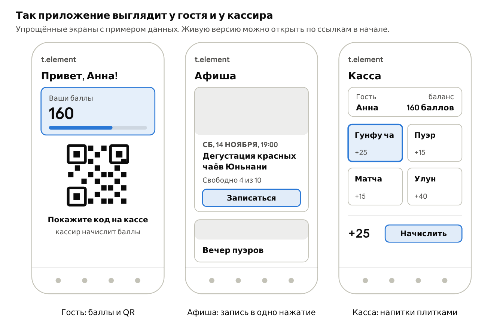
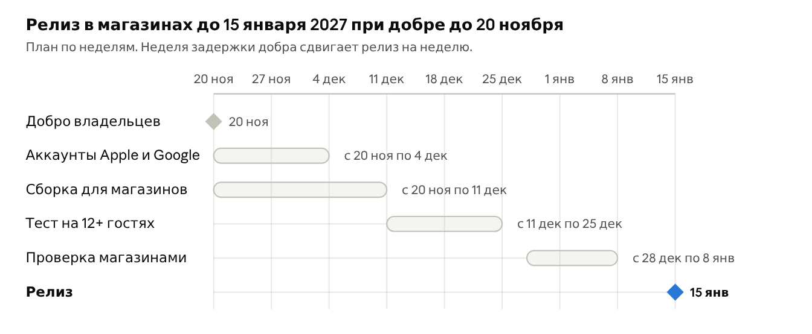
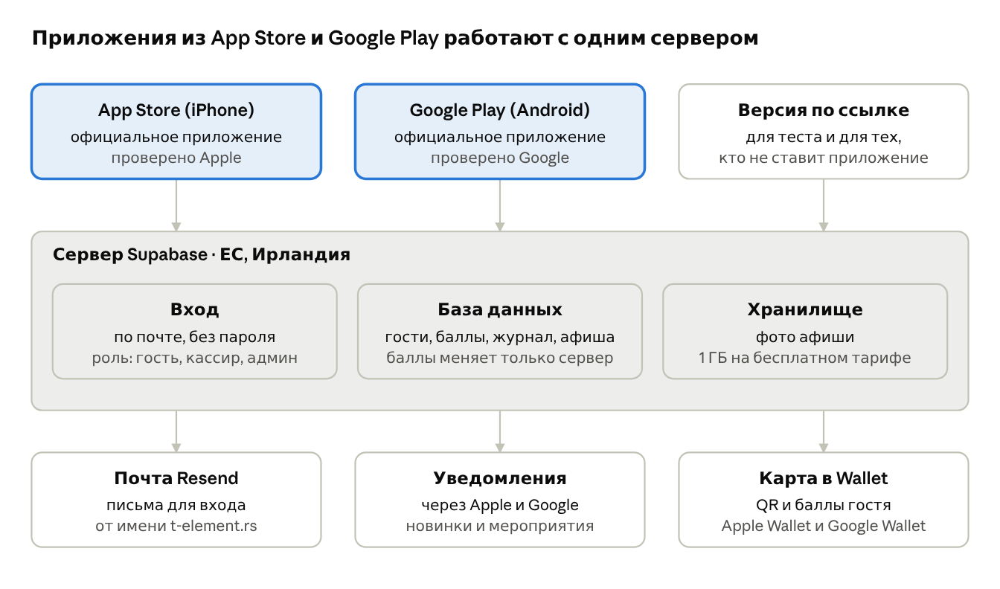

Приложение для гостей t.element
Предлагаем выпустить своё приложение t.element в App Store и Google Play для постоянных гостей: цифровую карту лояльности, афишу с записью и новинки с полок.
Приложение делает Евгений. Он работает в t.element и знает чайную и гостей изнутри.
Посмотреть можно уже сейчас:
Для кого
Для постоянных гостей t.element. Это люди, которые уже приходят за чаем и напитками, ходят на дегустации и собирают печати на бумажной карточке. Приложение не для привлечения новых людей с улицы, а чтобы свои гости возвращались чаще.
Вторая аудитория это команда: кассиры ведут баллы и список записавшихся, админы ведут меню, награды и афишу.
Боли
У постоянных гостей нет причины возвращаться чаще, а у чайной нет прямого канала к ним.
| Кого касается | Что мешает сейчас |
|---|---|
| Гости | Нечем выделиться и не за что возвращаться чаще. Бумажная карточка теряется и забывается дома. |
| Гости | Пропускают новинки на полках и мероприятия. |
| Чайная | Не знает, кто её постоянные гости и как часто они приходят: печати на бумаге не дают данных. |
| Чайная | Мероприятия платные, мест мало. Считать места и собирать записи приходится вручную. |
Что умеет приложение
Одно приложение в App Store и Google Play для всех. Что видит человек, зависит от его роли. Три языка: русский, сербский, английский.

| Роль | Что делает в приложении |
|---|---|
| Гость | Входит по почте без пароля. Показывает QR на кассе, копит баллы за напитки, видит награды и историю. Записывается на мероприятия в одно нажатие, может занять места для друзей. Смотрит новинки и заказывает их на сайте. Получает уведомления о новинках и мероприятиях. Карту гостя можно добавить в Apple Wallet и Google Wallet. |
| Кассир | Сканирует QR гостя камерой телефона, отмечает напитки плитками, баллы считаются сами. Выдаёт награды. Ведёт афишу и видит список записавшихся. |
| Админ | Всё, что кассир, плюс меню напитков с баллами, награды и сотрудники. Видит журнал всех начислений и правок с именем сотрудника и временем, может отменить ошибочную операцию. |
Меню, награды и афиша меняются прямо в приложении, без программиста и без новой проверки в магазинах. Оплата мероприятий остаётся наличными на месте, онлайн-оплату можно добавить позже.
Ожидаемые выгоды
Главная выгода: постоянные гости приходят чаще, а чайная может напрямую сообщить им о новинке или дегустации.
- Возвраты. Баллы и награды дают гостю причину зайти ещё раз. Карта всегда в телефоне и не теряется.
- Свой канал связи. Уведомление приходит сразу всем постоянным гостям, без рекламы и алгоритмов соцсетей.
- Полные мероприятия. Запись в одно нажатие, счётчик мест ведётся сам, список гостей виден кассиру.
- Знание своих гостей. Видно, сколько у чайной постоянных гостей, как часто они приходят и что пьют.
- Порядок в баллах. Каждое начисление и каждая правка записаны с именем сотрудника и временем.
- Образ чайной. Своё приложение в App Store и Google Play выделяет t.element среди кофеен и чайных города.
Цифр выгоды мы заранее не обещаем. На тесте считаем две вещи: сколько постоянных гостей поставили приложение и как часто они приходят до и после.
Сроки
Если добро будет до 20 ноября, приложение выйдет в App Store и Google Play не позже 15 января 2027. Это наша оценка с запасом на новогодние праздники и на один отказ при проверке.

Откуда берутся сроки:
- Аккаунты, 2 недели. Номер D-U-N-S для компании приходит до 5 рабочих дней, и ещё до 2 дней Apple ждёт его передачи (Apple). Тот же номер нужен Google (Google Play).
- Сборка для магазинов, 3 недели. Упаковка приложения, уведомления, карта в Wallet, удаление аккаунта из приложения. Идёт параллельно с аккаунтами.
- Тест, 2 недели. Google требует от новых личных аккаунтов закрытый тест на 12 людях в течение 14 дней (Google Play). Мы всё равно совмещаем его с тестом на постоянных гостях.
- Проверка, до 2 недель. Apple проверяет 90% приложений меньше чем за 48 часов (Apple). Остальное время запас на правки и праздники.
Уже сделано: прототип, рабочая версия на сервере, база данных с правами доступа и проверками, админка и афиша.
Стоимость
Первый год обойдётся в 3 000 € за работу и 124 $ за аккаунты магазинов. Сервер и почта на старте бесплатны.
| Статья | Цена | Как часто |
|---|---|---|
| Разработка, тест и публикация в App Store и Google Play | 1 200 € | один раз |
| Поддержка, до 4 часов в месяц: исправления, мелкие правки, обновления под новые iOS и Android, помощь команде. Новые функции оцениваются отдельно | 150 € | в месяц |
| Apple Developer Program: аккаунт для App Store и Apple Wallet | 99 $ | в год |
| Google Play Console: аккаунт для Google Play | 25 $ | один раз |
| Номер D-U-N-S для аккаунтов от имени компании | 0 € | один раз |
| Сервер Supabase, бесплатный тариф: до 50 000 активных пользователей в месяц | 0 € | в месяц |
| Почта для входа Resend, бесплатный тариф: до 100 писем в день | 0 € | в месяц |
Если чайная вырастет из бесплатного тарифа, Supabase Pro стоит от 25 $ в месяц. Разработка оплачивается фиксированно: если работа займёт больше времени, цена не растёт. Аккаунты магазинов и сервера оформляются на чайную, а не на разработчика.
Когда это окупается
В первый год работа стоит в среднем 250 € в месяц, это около 29 400 динаров по курсу 117,6. Столько дополнительных визитов в месяц покрывают эту сумму по выручке:
| Средний чек | Доп. визитов в месяц | Это в день |
|---|---|---|
| 600 дин | 49 | около 2 |
| 900 дин | 33 | около 1 |
| 1 200 дин | 25 | меньше 1 |
Со второго года остаются только поддержка и аккаунт Apple, около 157 € в месяц, и порог падает больше чем на треть. Для сравнения: если приложение заполнит десять мест на дегустации по 1 200 дин, это 12 000 дин выручки, больше трети месячной суммы.
Сколько стоят награды
Награды это скидка для постоянных гостей, и её размер задаёт чайная. Например, 10 баллов за напиток и награда за 100 баллов дают бесплатный напиток на каждые 10 купленных, это скидка около 9%. Если оставить то же правило, что на бумажной карточке, приложение не добавляет новых расходов на награды. Правило меняется в админке в любой момент.
Риски и что мы с ними делаем
Самый вероятный риск в том, что гости не станут ставить приложение. Поэтому сначала тест на небольшой группе, потом запуск для всех.
| Риск | Что делаем |
|---|---|
| Гости не ставят приложение | Тест на 12 и более постоянных гостях до запуска. Кассир предлагает приложение при оплате, на кассе QR со ссылкой на магазины. До установки карта работает по ссылке в браузере. |
| Apple отклоняет приложение как «переупакованный сайт» (правило 4.2) | В приложении есть функции телефона: уведомления, карта в Wallet, камера кассира. В сроках заложена неделя на повторную проверку. |
| Оформление аккаунтов компании затягивается | Номер D-U-N-S запрашиваем в первый день после добра. Разработка идёт параллельно и не ждёт аккаунтов. |
| Касса тормозит в час пик | Начисление занимает три нажатия: скан, напитки, «Начислить». Если камера не сработала, гостя можно найти по почте. |
| Злоупотребления и ошибки с баллами | Баллы меняет только сервер, всё пишется в журнал с именем сотрудника. Ошибку отменяет только админ. Позже можно сделать QR, который меняется каждую минуту. |
| Зависимость от одного разработчика | Аккаунты и код принадлежат чайной. Сервисы распространённые, есть описание базы и проверки. Другой разработчик сможет продолжить. |
| Потеря данных или сбой сервера | Ночная резервная копия базы на отдельном сервере. Бесплатный тариф Supabase ставит проект на паузу после недели без активности, при ежедневной работе чайной это не случится. |
| Личные данные гостей | Храним только почту и имя. Сервер в Ирландии, в ЕС. Гость может удалить аккаунт, журнал баллов при этом становится безымянным. |
Что нужно от владельцев
Чем раньше добро, тем раньше релиз: самое долгое здесь это оформление аккаунтов компании.
- Добро на запуск и бюджет из раздела «Стоимость».
- Данные юрлица для D-U-N-S и человек с правом подписи: Apple требует, чтобы аккаунт оформлял владелец или сотрудник с его полномочиями.
- Рабочая почта на домене t-element.rs для аккаунта Apple.
- Доступ к DNS домена у Hostinger: чтобы письма для входа шли от имени чайной.
- Правило баллов: сколько за каждый напиток и сколько стоит каждая награда.
- 12 и более постоянных гостей, готовых попробовать приложение две недели до релиза.
Технические детали для тех, кому интересно

- Официальные приложения. Гость скачивает t.element из App Store или Google Play, как любое другое приложение. Перед публикацией каждую версию проверяют Apple и Google. Приложение выходит от имени чайной.
- Один код на все телефоны. iPhone, Android и браузер работают на одной кодовой базе. Поэтому правки дешевле, чем с двумя отдельными приложениями.
- Меню, награды и афиша лежат на сервере. Их правки появляются у всех сразу, без новой версии в магазинах.
- Сервер. Supabase на базе PostgreSQL, центр данных в Ирландии. Права доступа заданы в самой базе: гость видит только свои баллы, кассир не может менять меню, баллы меняются только серверными функциями.
- Проверено. 16 автоматических проверок базы проходят, встроенная проверка безопасности Supabase ошибок не находит.
- Владение. Аккаунты Apple, Google и Supabase оформляются на чайную. Код хранится в репозитории GitHub.
Вопросы и обсуждение: Евгений.